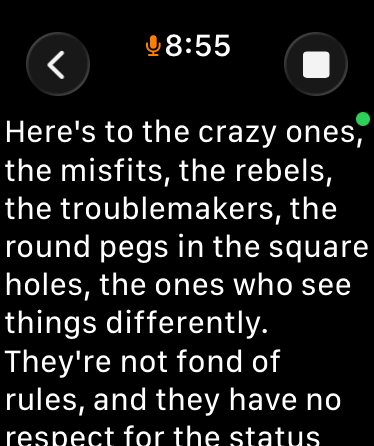
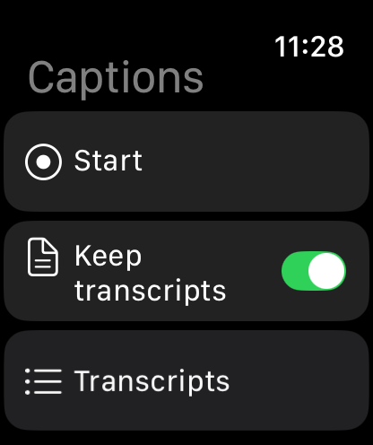

Live captions on your wrist.
Your Apple Watch listens and shows you what people are saying — your iPhone can stay in your pocket. Nothing is uploaded, because there is nowhere to upload it to.
- The watch does the listening. The microphone is on your wrist, where the conversation is — no placing a phone on the table between you and the person talking.
- Your iPhone makes it sharper — even from your pocket. What the watch hears streams privately over Bluetooth to your phone, whose more powerful transcription refines what you see. Phone left at home? The watch captions on its own, every time.
- Works with no signal at all. No Wi-Fi, no cellular, no account. The speech model runs on the devices you're wearing.
- Nothing leaves your devices. No servers, no analytics, no ads, no tracking. Conversations stay between your watch and your phone unless you choose to share one.
- Keep what matters. Save a conversation, read it later on your phone with an on-device summary, and share it to Notes, Obsidian, Mail — anywhere you like.
- Free, with no catch. No subscription and no upsell. If it helps you and you'd like to say thanks, there's a tip jar. That's all.


iPhone — saved conversations
What it does well, and what it doesn't
Captions works best in one-to-one and small-group conversation at ordinary speaking distance. Like every speech recogniser, it struggles in noisy rooms, with several people talking over each other, and with accents it hasn't heard much of. It does not label who is speaking, and it will get words wrong.
Captions is a convenience app, not a medical device or a hearing aid. It is not a substitute for professional captioning or interpreting, and it makes no claim to treat or diagnose anything.
Common questions
- How is this different from Apple's Live Listen captions?
- Live Listen listens with your iPhone's microphone, so the phone has to sit near whoever is speaking. Captions listens at your wrist — the phone can stay in your pocket and still do the heavy lifting over Bluetooth — and it keeps captioning even with no phone at all. It can also save and summarise conversations rather than showing them once and forgetting. Apple's feature is free and built in; if it fits how you live, use it.
- Do I need an iPhone?
- Yes, for setup and for the best accuracy — but not with you at every moment. The watch captions on its own when the phone isn't reachable.
- Is my conversation sent anywhere?
- No. There is no server, no account, and no analytics. Audio is processed on your watch and your phone and is not stored after a session ends. See the privacy policy.
- Does it record the other person?
- Audio is transcribed as it is heard and is not saved. If you choose to keep a conversation, the text transcript is saved on your devices. Please be mindful that recording or transcribing others may require their consent where you live.